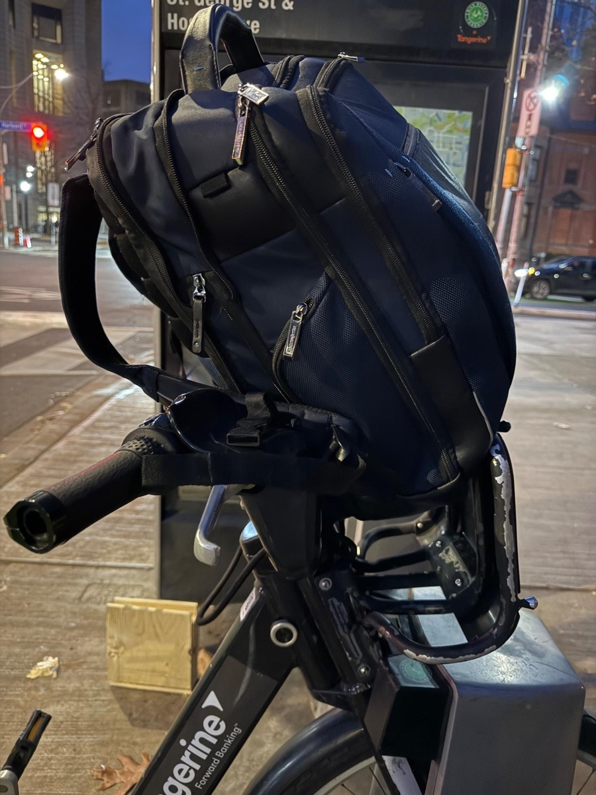
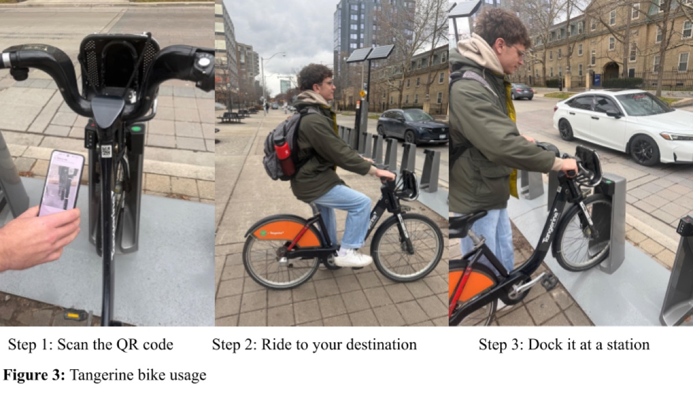
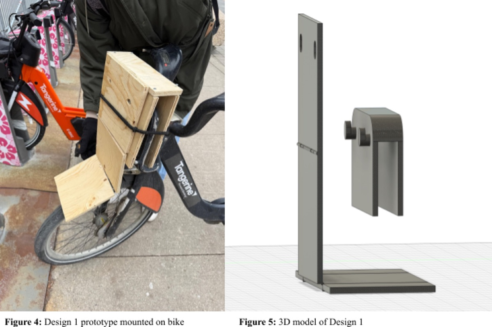
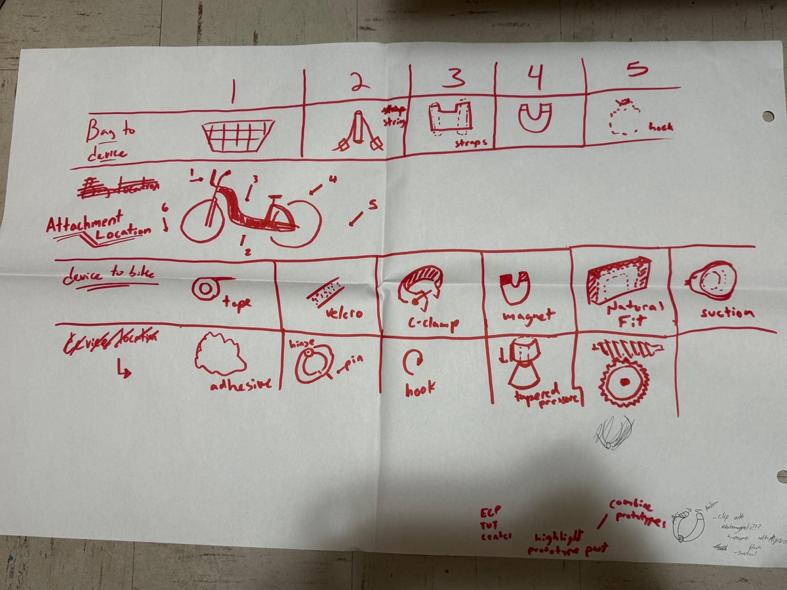
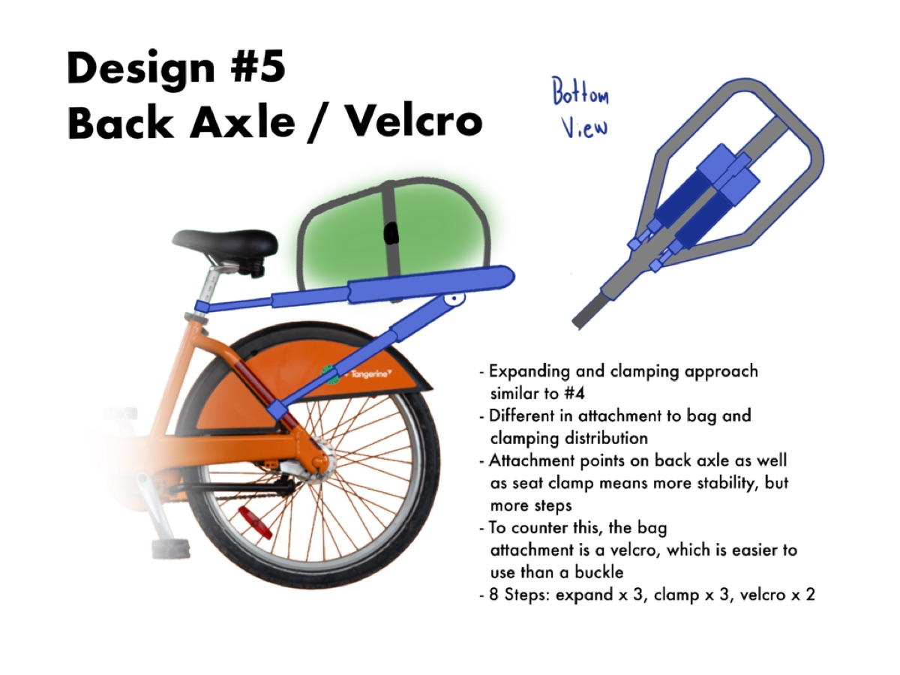
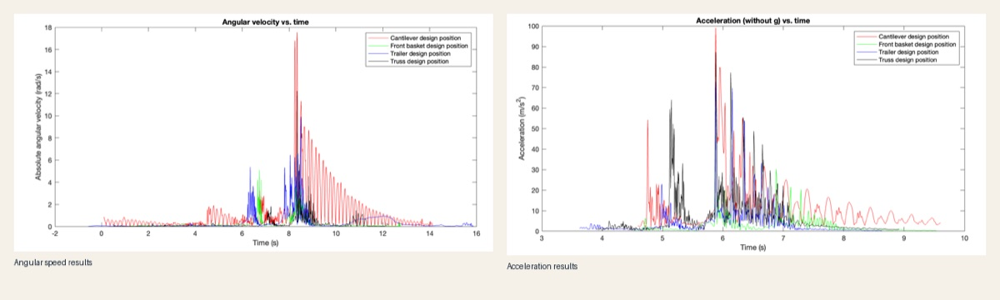
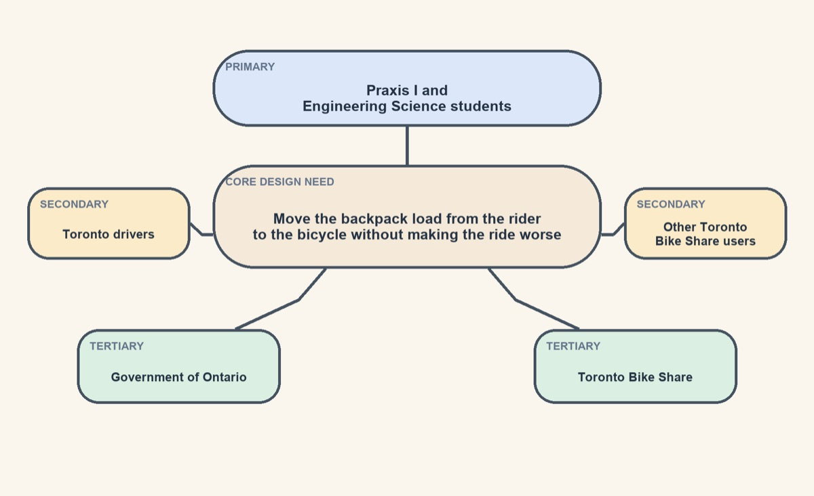

A student commuting problem translated into a proxy-tested front-basket concept through stakeholder analysis, divergent concepts, calculations, and convergence.
A student commuter problem translated into an engineering design concept.
Our group started from a specific design opportunity—a “splartz” in the course terminology: Engineering Science students often use
Toronto Bike Share bikes to get to class, but the stock front basket is too small for
a full backpack. That forces the rider to keep the load on their back even though the
ride posture already increases spinal stress.
The report recommends a foldable front-basket extension that mounts to the existing
basket, carries the bag in front of the rider, and stores at roughly laptop scale.
It was selected as the team’s preferred concept; the proxy tests do not establish a medical outcome or full-product performance.
Praxis ICADMATLABProxy testingPrototyping
Evidence at a glance
What the testing supports—and what it does not.
Measured proxy-test patternLowest recorded acceleration and angular speed
The front-basket position recorded 58.7 m/s² and 6.7 rad/s, the lowest values among the four tested positions.
Test conditionOne trial per position at 5 ± 1 km/h
The report treats these as positional proxy tests, not validation of a finished product.
Team experience, implicit assumptions, and unmodelled bag deformation limit confidence in the result.
Opportunity and context
The need
The report frames the problem around spine discomfort during commuting. Many Engineering Science students
commute using Toronto Bike Share bicycles and need to carry backpacks. Studies show that carrying a heavy
backpack while cycling can increase spinal stress and discomfort.
The report also highlights the need for a solution that is easy to use and does not interfere with the normal operation of the bike-share system.
All domains of road safety must be considered, including the impact on visibility, stability, and predictability of the bicycle.
Based on the team’s comparison and limited proxy tests, the report recommends the front attachment as a qualified preferred concept; the available evidence does not establish full-product or medical performance.
Stakeholders
All stakeholders must be considered for a valid design.
Primary: Praxis I and Engineering Science students who want to transport their bags without back pain and without making the riding experience worse.
Secondary: Toronto drivers and other Bike Share users who should not be disturbed by a wider, less stable, or less predictable bicycle.
Tertiary: Bike Share Toronto and the Government of Ontario, who require legal compliance, preserved visibility, and no visible damage to the bicycles.
Scoping
Requirements and evaluation criteria
The need led the team to develop a set of
requirements and evaluation criteria listed below to determine which designs outperformed others. More detail is provided in the full PDF report.
Requirement 1
Must fit in a standard backpack
The device must be portable to meet the stakeholders’ needs. To achieve this, the
device must fit in a standard backpack. The achievement of this requirement is evaluated by
how close the dimensions are to those of a standard laptop.
Requirement 2
Protect the backpack and its contents
The attachment must secure the bag without applying enough force to permanently
deform the backpack or the objects stored inside it.
Requirements 3-5
Keep the system secure, quick, and simple
The design must hold the bag securely during riding while still staying easy to use,
with fewer than 20 steps and fewer than 30 different parts.
Requirements 6-8
Preserve safety, the bike, and ride stability
It also has to follow road and safety regulations, avoid visible damage to Bike
Share Toronto bicycles, and keep the bike's center of mass as low as possible.
Gallery
Process evidence from the BikePack Buddy report.
Pictures from the report are included below. Click any figure to open a larger view.






Recommendation
Why the front basket extension was recommended over the other candidates
The team recommended the front-basket extension after comparing compactness, proxy-test motion data, setup, part count, and stakeholder considerations.
Tested position
Storage dimensions
Mass
Acceleration
Angular speed
Steps
Parts
Trailer
45.0 × 72.0 × 40.0 cm
3.66 kg
72.6 m/s²
9.8 rad/s
8
12
Front basket
22.6 × 15.3 × 6.6 cm
1.60 kg
58.7 m/s²
6.7 rad/s
8
6
Cantilever
35.9 × 4.85 × 80.9 cm
1.01 kg
87.2 m/s²
12.2 rad/s
11
9
Truss
35.9 × 3.00 × 80.9 cm
0.714 kg
97.4 m/s²
17.6 rad/s
5
3
Measured in one proxy trial per position at 5 ± 1 km/h. Angular speed—not angular momentum—was recorded. The front-basket concept was not the lightest design.
Why it won
Among the four tested positions, the front-basket concept had the smallest storage volume and the lowest recorded acceleration and angular speed. It also used the elastics already present on the front of the bike.
What it still traded away
The front-basket concept was not best on every metric. The team judged its compactness,
recorded motion, existing elastic retention, and ease-of-use assumptions to offer a useful
compromise. Because the evidence came from limited proxy tests, that judgment remains a
design recommendation rather than verified product performance.
Why the recommendation is qualified
The report explicitly limits the recommendation because the tests used one trial per position and did not account for bag deformation. Team experience and implicit assumptions also reduce confidence in the conclusion.
Annotated process
Three CTMFs that best explain the BikePack Buddy process
The assignment asks for three distinct CTMFs. This review presents one framing CTMF, one divergence CTMF, and one convergence CTMF, explaining how each appeared in the project, why it was useful, and how it connects to my position statement.
Click any CTMF card to open the full annotated review, figures, and assessment.
Position statement reflection
How BikePack Buddy contributed to my position on engineering design
This section explains how the project affected my position on engineering design.
Careful planning
BikePack Buddy was the first project in which I had to plan each stage carefully before moving to the next. The team considered the stakeholders and how the device might affect them, and used secondary research to support its claims before recommending a concept.
Compromise and shared authority
As explained in my position statement, Praxis I exposed me to a team in which authority and responsibility were shared. Before this, I had either directed the team or worked under one clear authority. Working with peers of equal standing became an important experience for my development as a person and engineer.
CTMF detail
CTMF 01
Stakeholder analysis
This CTMF focuses on identifying and understanding the key stakeholders involved in the
BikePack Buddy project. By mapping out their needs, concerns, and interactions with the
design, the team was able to pursue a more user-centred concept.
Explanation of the CTMF
This CTMF consists of systematically identifying the parties involved in the BikePack Buddy
project. This includes understanding their needs, concerns, and how they interact with the
design. Also we broke them down into primary, secondary, and tertiary stakeholders.
The process begins by defining the need and identifying the people directly affected by a
proposed response. From those primary stakeholders, the analysis expands to secondary and
tertiary groups with indirect or peripheral interests. Mapping relationships among these groups
helps expose where needs may align, conflict, or affect people who never interact directly with the design.
CTMF use in the project

The report uses stakeholder analysis to separate the directly affected users from the broader road, regulatory, and system context around the design.
Primary: Praxis I and Engineering Science students want their bags transported without back pain and without making the riding experience worse.
Secondary: Toronto drivers and other Toronto Bike Share users should not be disturbed by a wider, less stable, or less predictable bicycle.
Tertiary: The Government of Ontario and Toronto Bike Share require legal compliance, preserved bicycle usability, and no visible or permanent damage to the bikes.
Why it was useful
This CTMF is crucial in the process of engineering design, because it provides important context
for the project and it is the backbone for the needs, goals and objectives and requirements
that guide the design process. Also, it helps to ensure that all stakeholders are considered
and that their needs are addressed throughout the design process. Additionally it prevents our
design from harming people unintentionally.
Why it fits my position statement
This process connects to my position statement, specifically to the initial processes in my approach
to engineering design, which emphasizes the importance of defining a good opportunity and checking red lines. By
ensuring that all stakeholders are accounted for, I can ensure that no red lines are crossed, and that the final
design is more likely to improve the stakeholders' lived experience.
CTMF 02
SCAMPER
This CTMF uses a simple process to encourage creative thinking around one design.
Explanation of the CTMF
SCAMPER stands for:
Substitute
Combine
Adapt
Modify
Put to another use
Eliminate
Reverse
By using SCAMPER, you basically divide the design into different pieces, and you modify
them to explore new possibilities. You can substitute other approaches, eliminate elements,
or combine components to create new concepts.
How it appeared in the project
As it is shown in the figure, the team used SCAMPER to generate new concepts around the front basket design.
First we combined the use of magnets into the natural fit design. We not only used the "Combine" method, but we also adapted the
magnets so they don't "stick" to the bike, but so they strengthen the hold that the base design had.
At first the Natural Fit design would have been a simple one-piece basket, but through SCAMPER we modified it into a foldable, modular design.
With the "Put to another use" method, we explored the possibility of using the main attachment as a storage box for the
actual holder, which would make the design more compact and easier to store when not in use. This was a key modification that made the design more practical for the stakeholders.
Why it was useful
SCAMPER allowed us to explore many new possibilities around the front basket design concept, which not only
made the team more confident that the final chosen design was the correct one after having explored various alternatives, but it also
gave the team the idea to use the device as a self-storage solution. By this I mean the way it folds and stores itself, which
ended up being a crucial feature when it came to deciding which design is the best.
Why it fits my position statement
This CTMF perfectly fits with my first point in the section "My position on engineering design", because SCAMPER encourages careful
planning before proceeding with a design and wasting resources and time. It allows for a more thoughtful exploration of ideas, leading to better outcomes.
CTMF 03
Prototyping
We used prototyping to compare selected design assumptions.
Explanation of the CTMF
Prototypes are an important part of engineering design. In Praxis I and II, they are used to
represent the most uncertain part of a concept, support communication among teammates and
stakeholders, and help the team converge on a preferred direction. A simple, low-fidelity
representation can expose weaknesses in an idea before later development.
Prototypes can consist of both physical low-fidelity devices, 3D CAD models that would showcase a feature or even
a simulation that would simulate the device's function without having to build and test it in real life.
How it appeared in the project
The team believed that Design 1, the “natural fit” design, best balanced the identified requirements. A low-fidelity prototype made from scrap wood in Myhal was used for proxy testing. It showed the folding concept and, in one positional trial, recorded the lowest acceleration and angular speed among the four tested positions.
Why it was useful
The prototype moved the team beyond theoretical comparison and made parts of the concept observable. It did not establish that every stakeholder need was achieved: the report identifies unmodelled bag deformation, implicit assumptions, team experience, and limited proxy testing as important limitations.
Why it fits my position statement
This approach connects to the “iterate” section of my engineering design flowchart. Early-stage
prototypes can expose issues that theory alone does not reveal, but they must be scoped and built
with due diligence so that testing does not create avoidable harm.